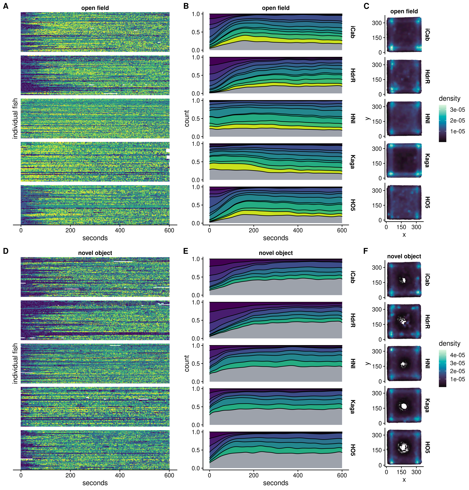

8 Time dependence of HMM states (DGE)
8.1 Setup
8.1.1 Load libraries
library(tidyverse)
#> ── Attaching packages ─────────────────── tidyverse 1.3.1 ──
#> ✔ ggplot2 3.3.6 ✔ purrr 0.3.4
#> ✔ tibble 3.1.7 ✔ dplyr 1.0.9
#> ✔ tidyr 1.2.0 ✔ stringr 1.4.0
#> ✔ readr 2.1.2 ✔ forcats 0.5.1
#> ── Conflicts ────────────────────── tidyverse_conflicts() ──
#> ✖ dplyr::filter() masks stats::filter()
#> ✖ dplyr::lag() masks stats::lag()
library(cowplot)
library(ggridges)
library(viridisLite)
library(googlesheets4)8.1.2 Set variables
IN = "/hps/nobackup/birney/users/ian/pilot/hmm_out/0.08/dist_angle/14.csv"
AOV_SHEET = "https://docs.google.com/spreadsheets/d/1_l72BZkmWyNAOfCUI8WGP4UfQuIPQtPZZmlRjQffvEs"
N_STATES = 15
OUT_DGE = here::here("book/figs/time_dependence/dist_angle/0.08_14_dge.png")
# Create line recode vector
line_vec = c("iCab", "HdrR", "HNI", "Kaga", "HO5")
names(line_vec) = c("icab", "hdr", "hni", "kaga", "ho5")8.2 Read and process data
df = readr::read_csv(IN) %>%
# recode angle to sit between 0 and 360
dplyr::mutate(angle_recode = ifelse(angle < 0,
180 + (180 + angle),
angle))
#> Rows: 9152328 Columns: 15
#> ── Column specification ────────────────────────────────────
#> Delimiter: ","
#> chr (6): assay, ref_fish, test_fish, tank_side, quadrant...
#> dbl (9): date, time, frame, seconds, x, y, distance, ang...
#>
#> ℹ Use `spec()` to retrieve the full column specification for this data.
#> ℹ Specify the column types or set `show_col_types = FALSE` to quiet this message.
# Recode states by mean distance
rank_df = df %>%
dplyr::group_by(state) %>%
dplyr::summarise(mean_dist = mean(distance)) %>%
# rank
dplyr::arrange(mean_dist) %>%
dplyr::mutate(rank = 1:nrow(.))
recode_vec = rank_df %>%
dplyr::pull(rank)
names(recode_vec) = rank_df %>%
dplyr::pull(state)
# Recode `state`
df = df %>%
dplyr::mutate(state_recode = dplyr::recode(state, !!!recode_vec))
# Recode `assay`
df = df %>%
dplyr::mutate(assay = stringr::str_replace(assay, "_", " "),
assay = factor(assay, levels = c("open field", "novel object")))
# Add `line`
df = df %>%
dplyr::mutate(line = dplyr::case_when(fish == "ref" ~ ref_fish,
fish == "test" ~ test_fish)) %>%
# recode
dplyr::mutate(line = dplyr::recode(line, !!!line_vec)) %>%
# factorise to order
dplyr::mutate(line = factor(line, levels = line_vec))
# Recode `test_fish` and order
df = df %>%
dplyr::mutate(test_fish = dplyr::recode(test_fish, !!!line_vec),
test_fish = factor(test_fish, levels = line_vec))8.3 Pull significant states from spreadsheets
SIGS_DGE_OF = googlesheets4::read_sheet(AOV_SHEET, sheet = "DGE_OF") %>%
dplyr::filter(`p-value FDR-adj` < 0.05 & `Variable` == "line") %>%
dplyr::pull(State) %>%
as.integer()
#> ! Using an auto-discovered, cached token.
#> To suppress this message, modify your code or options to
#> clearly consent to the use of a cached token.
#> See gargle's "Non-interactive auth" vignette for more
#> details:
#> <https://gargle.r-lib.org/articles/non-interactive-auth.html>
#> ℹ The googlesheets4 package is using a cached token for
#> 'brettell@ebi.ac.uk'.
#> ✔ Reading from "aov_state_freq".
#> ✔ Range ''DGE_OF''.
SIGS_DGE_NO = googlesheets4::read_sheet(AOV_SHEET, sheet = "DGE_NO") %>%
dplyr::filter(`p-value FDR-adj` < 0.05 & `Variable` == "line") %>%
dplyr::pull(State)%>%
as.integer()
#> ✔ Reading from "aov_state_freq".
#> ✔ Range ''DGE_NO''.8.4 Tile plots
SEC_INT = 2
dge_tile_df = df %>%
# remove iCab ref fishes (because DGE compares test fishes)
dplyr::filter(!(line == "iCab" & fish == "ref")) %>%
#dplyr::slice_sample(n = 1e6) %>%
# add `indiv` column
tidyr::unite(date, time, quadrant, fish,
col = "indiv",
sep = "_") %>%
# get top state per 2 seconds
dplyr::mutate(seconds_bin = floor(seconds / SEC_INT)) %>%
dplyr::group_by(assay, indiv, line, seconds_bin) %>%
dplyr::count(state_recode) %>%
dplyr::slice_max(order_by = n, n = 1) %>%
dplyr::ungroup() %>%
# reverse order by `indiv` so that the earliest videos are at the top
dplyr::arrange(indiv) %>%
# convert `seconds_bin` back to seconds
dplyr::mutate(seconds = seconds_bin * SEC_INT)
# Open field
dge_tile_of = dge_tile_df %>%
dplyr::filter(assay == "open field") %>%
ggplot() +
geom_tile(aes(seconds, indiv, fill = state_recode)) +
facet_grid(rows = vars(line), cols = vars(assay), scales = "free") +
scale_fill_viridis_c() +
scale_y_discrete(limits = rev) +
guides(fill = "none") +
ylab("individual fish") +
cowplot::theme_cowplot(font_size = 12) +
theme(strip.background = element_blank(),
strip.text = element_text(face = "bold"),
axis.text.y = element_blank(),
axis.ticks.y = element_blank(),
axis.line.y = element_blank())
# Novel object
dge_tile_no = dge_tile_df %>%
dplyr::filter(assay == "novel object") %>%
ggplot() +
geom_tile(aes(seconds, indiv, fill = state_recode)) +
facet_grid(rows = vars(line), cols = vars(assay), scales = "free") +
scale_fill_viridis_c() +
scale_y_discrete(limits = rev) +
guides(fill = "none") +
ylab("individual fish") +
cowplot::theme_cowplot(font_size = 12) +
theme(strip.background = element_blank(),
strip.text = element_text(face = "bold"),
axis.text.y = element_blank(),
axis.ticks.y = element_blank(),
axis.line.y = element_blank()) 8.5 Density plots
# Take viridis colours for significant states and add grey
pal_dge_of = viridisLite::viridis(n = N_STATES)
pal_dge_of = c(pal_dge_of[SIGS_DGE_OF], "#9da2ab")
names(pal_dge_of) = c(as.character(SIGS_DGE_OF), "other")
pal_dge_no = viridisLite::viridis(n = N_STATES)
pal_dge_no = c(pal_dge_no[SIGS_DGE_NO], "#9da2ab")
names(pal_dge_no) = c(as.character(SIGS_DGE_NO), "other")
ASSAY = "open field"
time_dens_dge_of = df %>%
dplyr::filter(assay == ASSAY) %>%
# remove iCab when paired with a different test fish
dplyr::filter(fish == "test") %>%
# filter for target assay
#dplyr::filter(assay == ASSAY) %>%
# recode state
dplyr::mutate(state_plot_recode = dplyr::case_when(state_recode %in% SIGS_DGE_OF ~ as.character(state_recode),
TRUE ~ "other"),
state_plot_recode = factor(state_plot_recode, levels = c(as.character(SIGS_DGE_OF), "other"))) %>%
ggplot() +
geom_density(aes(seconds, after_stat(count), fill = state_plot_recode),
position = "fill") +
facet_grid(rows = vars(line),
cols = vars(assay)) +
scale_fill_manual(values = pal_dge_of) +
cowplot::theme_cowplot(font_size = 12) +
theme(strip.background = element_blank(),
strip.text = element_text(face = "bold")) +
guides(fill = "none") +
scale_x_continuous(breaks = c(0,200,400,600)) +
scale_y_continuous(breaks = c(0,0.5,1))
ASSAY = "novel object"
time_dens_dge_no = df %>%
dplyr::filter(assay == ASSAY) %>%
# remove iCab when paired with a different test fish
dplyr::filter(fish == "test") %>%
# filter for target assay
#dplyr::filter(assay == ASSAY) %>%
# recode state
dplyr::mutate(state_plot_recode = dplyr::case_when(state_recode %in% SIGS_DGE_NO ~ as.character(state_recode),
TRUE ~ "other"),
state_plot_recode = factor(state_plot_recode, levels = c(as.character(SIGS_DGE_NO), "other"))) %>%
ggplot() +
geom_density(aes(seconds, after_stat(count), fill = state_plot_recode),
position = "fill") +
facet_grid(rows = vars(line),
cols = vars(assay)) +
scale_fill_manual(values = pal_dge_no) +
cowplot::theme_cowplot(font_size = 12) +
theme(strip.background = element_blank(),
strip.text = element_text(face = "bold")) +
guides(fill = "none") +
scale_x_continuous(breaks = c(0,200,400,600)) +
scale_y_continuous(breaks = c(0,0.5,1))8.6 Spatial density plots
# Create density function
get_density <- function(x, y, ...) {
dens <- MASS::kde2d(x, y, ...)
ix <- findInterval(x, dens$x)
iy <- findInterval(y, dens$y)
ii <- cbind(ix, iy)
return(dens$z[ii])
}
# OF
sdens_dge_df = df %>%
#dplyr::slice_sample(n = 1e5) %>%
# filter out iCab references when paired with a different line
dplyr::filter(fish == "test") %>%
# group by line
dplyr::group_by(assay, line) %>%
# get densities
dplyr::mutate(density = get_density(x, y, n = 30)) %>%
dplyr::ungroup()
# Plot
sdens_dge_of = sdens_dge_df %>%
## take only states 1:4
dplyr::filter(assay == "open field") %>%
ggplot() +
geom_point(aes(x, y, colour = density),
alpha = 0.1, size = 0.2) +
facet_grid(cols = vars(assay), rows = vars(line)) +
colorspace::scale_color_continuous_sequential(palette = "Mako", rev = F) +
#scale_colour_viridis_c(option = "rocket") +
cowplot::theme_cowplot(font_size = 12) +
theme(aspect.ratio = 1,
strip.background = element_blank(),
strip.text = element_text(face = "bold")) +
scale_x_continuous(breaks = c(0,150,300)) +
scale_y_continuous(breaks = c(0,150,300)) +
xlab("x") +
ylab("y")
# NO
sdens_dge_no = sdens_dge_df %>%
dplyr::filter(assay == "novel object") %>%
# Plot
ggplot() +
geom_point(aes(x, y, colour = density),
alpha = 0.1, size = 0.2) +
#coord_polar() +
facet_grid(cols = vars(assay), rows = vars(line)) +
colorspace::scale_color_continuous_sequential(palette = "Mako", rev = F) +
#scale_colour_viridis_c(option = "rocket") +
cowplot::theme_cowplot(font_size = 12) +
theme(aspect.ratio = 1,
strip.background = element_blank(),
strip.text = element_text(face = "bold")) +
scale_x_continuous(breaks = c(0,150,300)) +
scale_y_continuous(breaks = c(0,150,300)) +
xlab("x") +
ylab("y")8.7 Combine for final figure
final_dge = cowplot::plot_grid(dge_tile_of +
theme(strip.background.y = element_blank(),
strip.text.y = element_blank(),
axis.title.y = element_text(vjust=-5)),
time_dens_dge_of,
sdens_dge_of,
dge_tile_no +
theme(strip.background.y = element_blank(),
strip.text.y = element_blank(),
axis.title.y = element_text(vjust=-5)),
time_dens_dge_no,
sdens_dge_no,
nrow = 2, ncol = 3,
rel_widths = c(1,1,0.6,1,1,0.6),
align = "hv",
labels = c('A', 'B', 'C', 'D', 'E', 'F'))
#> Warning: Graphs cannot be vertically aligned unless the axis
#> parameter is set. Placing graphs unaligned.
ggsave(OUT_DGE,
final_dge,
device = "png",
width = 11.5,
height = 12,
units = "in",
dpi = 400)
knitr::include_graphics(OUT_DGE)